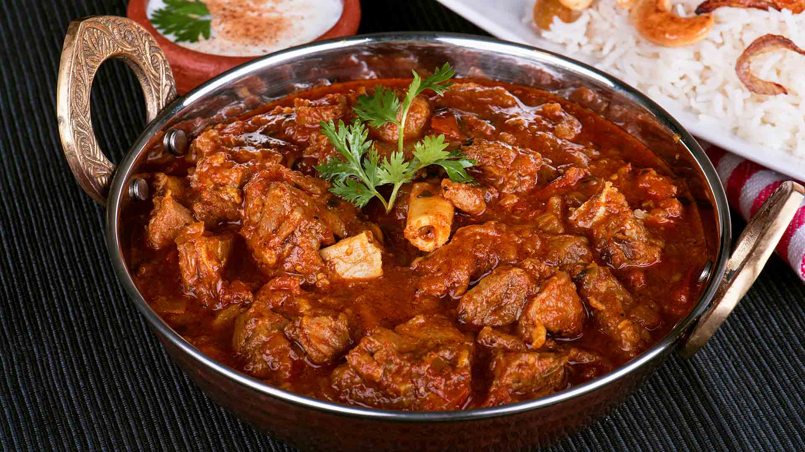

Mutton gravy

Description
Mutton curry is a dish that is prepared from goat meat and vegetables. The dish is found in different variations across all states, countries and regions of the Indian subcontinent and the Caribbean.
Ingredients
- 2 pounds goat stew meat, cut into chunks
- 2 teaspoons salt, divided
- 1 teaspoon ground turmeric, divided
- ½ teaspoon ground black pepper
- 2 small red onions, quartered
- 1 ½ tablespoons coconut oil
- 1 cinnamon stick, broken into pieces
- 2 whole star anise pods
- 4 cardamom pods
- 4 cardamom pods
- ½ teaspoon whole cloves
- 2 tablespoons curry leaves, divided
- 1 tablespoon ginger-garlic paste
- 1 small tomato, diced
- 1 teaspoon coconut oil
- 1 ½ teaspoons garam masala
- 1 ½ teaspoons curry powder
- 1 ½ teaspoons ground paprika
- ½ cup chopped fresh cilantro
Steps
- Season goat meat with 1 teaspoon salt, 1/2 teaspoon turmeric, and black pepper.
- Place red onions in a blender; grind into a smooth paste.
- Heat 1 1/2 tablespoons coconut oil in a Dutch oven over medium heat. Add cinnamon stick, star anise, and cardamom pods; cook until aromatic, about 30 seconds. Add fennel and cloves; cook and stir for 30 seconds. Add remaining 1 teaspoon salt and 1 tablespoon curry leaves; stir in the onion paste. Increase heat to medium-high. Cook and stir curry mixture for 5 minutes; add ginger-garlic paste and continue cooking until flavors meld, about 10 minutes.
- Stir diced tomato into the curry mixture. Cook and stir until mushy, about 4 minutes. Add the seasoned goat meat; cook until browned, 6 to 10 minutes. Transfer goat curry to a slow cooker; cook on High until meat is tender, 2 to 3 hours.
- Heat 1 teaspoon coconut oil in a saucepan over medium heat. Cook and stir the remaining 1/2 teaspoon turmeric, garam masala, curry powder, and paprika until aromatic, about 1 minute. Add a few cups of the curry from the slow cooker; heat until oil rises to the top. Add remaining 1 tablespoon curry leaves and cilantro; cook until gravy thickens, 3 to 5 minutes. Pour back into the slow cooker and blend well.